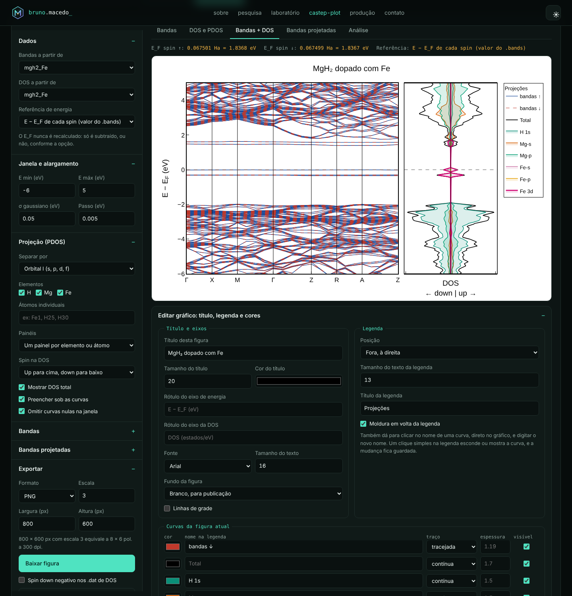
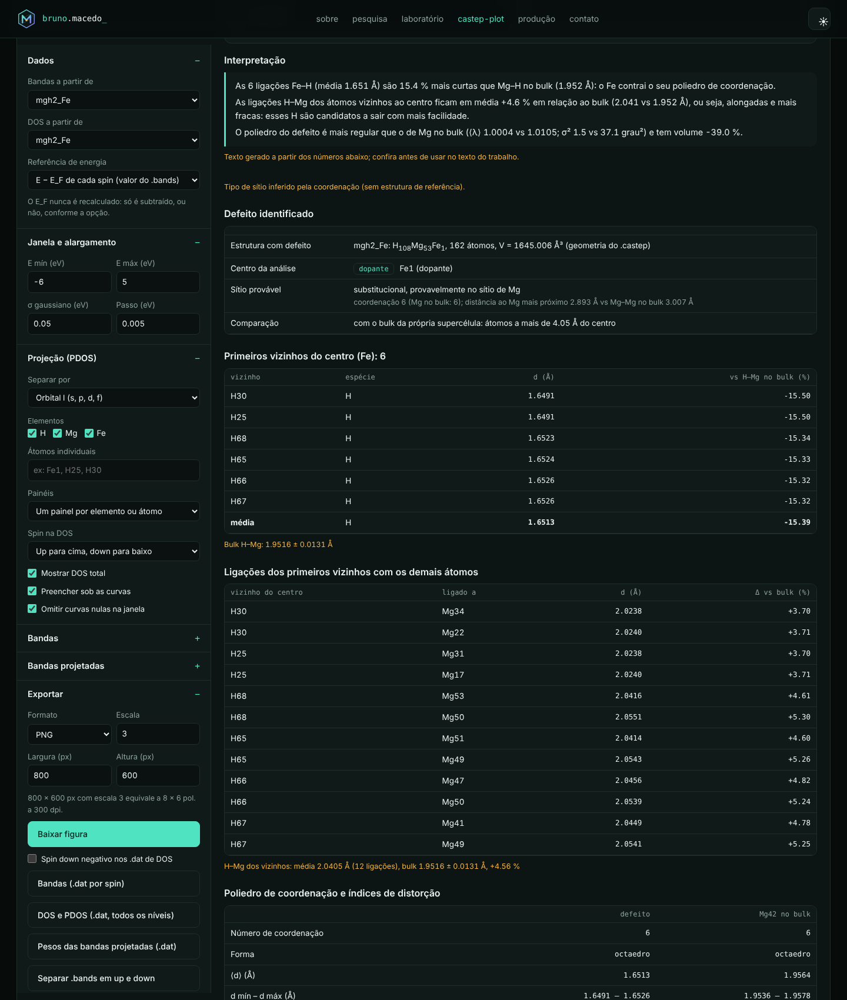
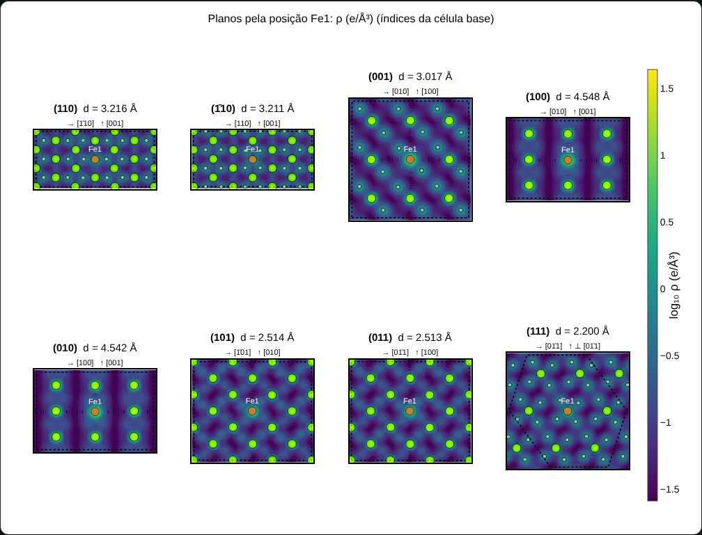
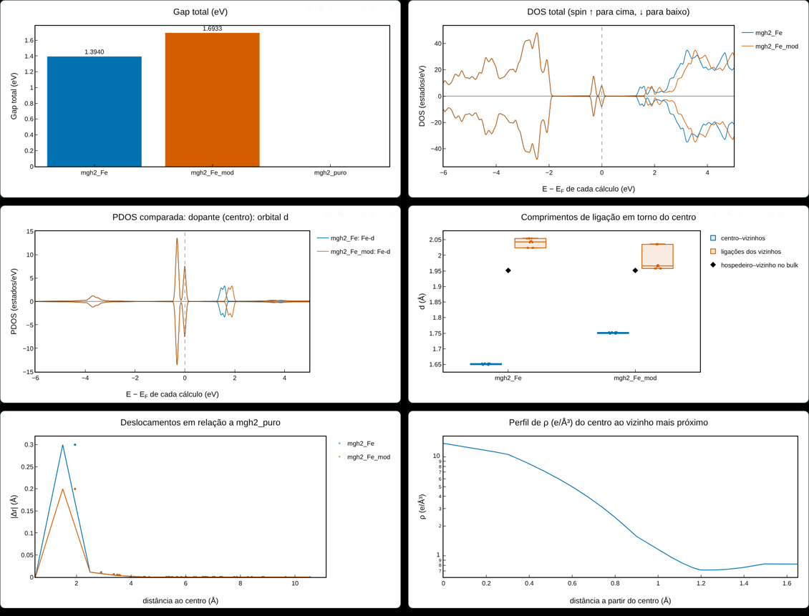

1. Visão geral
O BrUMaRe lê as saídas do CASTEP [1], do VASP e do SIESTA e produz, para qualquer material e qualquer átomo:
- a estrutura de bandas, a DOS e a PDOS, com spin up e down;
- as bandas projetadas por orbital;
- a análise da estrutura local de defeitos (vacância, substitucional ou intersticial) e da distorção que eles causam;
- a termodinâmica de formação e de dessorção de hidrogênio;
- a densidade de carga total e polarizada, em 3D, 2D e em perfis;
- a comparação lado a lado entre vários cálculos.
Há duas formas de uso, que fazem a mesma análise:
| Site (navegador) | Script Python (cluster) | |
|---|---|---|
| Como usar | arraste os arquivos; ajuste tudo na tela | python3 brumare.py seed |
| Instalação | nenhuma; os arquivos não saem do seu computador | Python 3.8+, numpy e matplotlib |
| Saídas | figuras PNG/SVG, .dat para o Origin, CHGCAR/XSF para o VESTA, .zip de cálculos, relatórios .txt | as mesmas, em seed_plots/ |
Princípio central: a energia de Fermi nunca é recalculada. O valor usado é exatamente o que o CASTEP escreveu no .bands, para cada spin; por padrão, as bandas e a DOS ficam nas energias originais e uma linha traço-ponto marca EF; também dá para escolher E − EF.
Formas de usar o BrUMaRe
O nome BrUMaRe junta Bruno Macedo e Renata Benedet, e é também o acrônimo de Brillouin-zone Utilities for Materials Research. Dentro dele está bruma, névoa: a nuvem eletrônica que o programa mostra. A mesma análise está disponível de quatro formas:
| Forma | Para quem | Como começar |
|---|---|---|
| Página web | análise interativa, sem instalar nada | abra brunohdmacedo.tech/brumare e arraste os arquivos |
| Aplicativo de computador | a mesma interface desta página, numa janela, sem internet | pip install "brumare[gui]" e brumare-gui |
| Programa para Windows | o mesmo aplicativo, para quem não usa Python | instalador BrUMaRe-Setup.exe na página de versões |
| Linha de comando | cluster e scripts | pip install brumare ou o brumare.py; depois brumare mgh2_Fe |
O aplicativo de computador e o .exe abrem esta mesma interface, com as mesmas abas e exportações, usando bibliotecas embutidas: funcionam offline. A linha de comando também faz a comparação (brumare --comparar A,B,C) e o relatório da diferença de densidade (--field diff). Todas as formas têm uma parte Sobre, com nome, versão, autor, links e como citar; na linha de comando, use brumare --sobre.
Programas suportados: CASTEP, VASP e SIESTA
O BrUMaRe lê as saídas dos três programas e converte tudo para o mesmo formato interno. Bandas, DOS, PDOS, análise eletrônica, defeitos, termodinâmica, densidade e comparação funcionam igual para os três, e dá para comparar cálculos de programas diferentes na mesma tabela. A energia de Fermi é sempre a que o programa escreveu.
| Programa | Arquivos | Como gerar |
|---|---|---|
| CASTEP | seed.bands, .pdos_bin, .castep, .cell, .den_fmt | seção 2 deste tutorial |
| VASP | a pasta do cálculo: vasprun.xml, KPOINTS, CHGCAR (e POSCAR/CONTCAR) | LORBIT = 11 (projeções), ISPIN = 2 (spin), LCHARG = .TRUE. (densidade); KPOINTS em modo de linha para as bandas |
| SIESTA | SystemLabel.bands, .EIG, .KP, .PDOS, .STRUCT_OUT ou .XV, .RHO e a saída .out | %block BandLines (ou BandPoints), %block ProjectedDensityOfStates, SaveRho true, Spin polarized |
Como carregar:
- No navegador: arraste a pasta inteira ou use Abrir pasta. No VASP, o nome da pasta vira o nome do cálculo, porque os arquivos têm nomes fixos. Sem pasta, renomeie os arquivos como
nome.vasprun.xml,nome.KPOINTSe assim por diante. - No Python:
brumare pasta_do_vasp/,brumare SystemLabel(SIESTA) ou simplesmentebrumaredentro da pasta. Na interface gráfica, escolha a pasta e o cálculo na lista.
O que muda em cada programa:
- VASP:
- As projeções cobrem só as esferas PAW em volta dos átomos, então a soma da PDOS fica abaixo da DOS total. Isso é normal.
- Num cálculo de bandas não autoconsistente, o próprio VASP recomenda usar o EF do cálculo autoconsistente: carregue os dois e escolha o autoconsistente em DOS a partir de.
- Em cálculos não colineares, só a parte total das projeções é usada.
- SIESTA:
- O
.PDOStraz a PDOS já calculada pelo SIESTA, com as camadas n, l e m e o alargamento escolhido no.fdf. Ela é usada diretamente. - Como não há pesos por banda, não existem bandas projetadas.
- Com o
.bandse o.EIGjuntos, as bandas vêm do caminho e a DOS da malha autoconsistente, escolhida sozinha.
- O
- Só no CASTEP: a população de Mulliken e o gerador de cálculos de referência, que escreve
.celle.param.
2. Preparar o cálculo no CASTEP
Palavras-chave do .param que geram tudo o que a ferramenta usa:
TASK : SPECTRAL ! ou GeometryOptimization, SinglePoint
SPECTRAL_TASK : BANDSTRUCTURE ! DOS para uma malha densa
SPIN_POLARIZED : TRUE
PDOS_CALCULATE_WEIGHTS : TRUE ! gera o .pdos_bin (PDOS e bandas projetadas)
POPN_CALCULATE : TRUE ! Mulliken e ligações no .castep
WRITE_FORMATTED_DENSITY : TRUE ! gera o .den_fmt (densidade de carga e de spin)O caminho de bandas vai no .cell, em %BLOCK SPECTRAL_KPOINT_PATH [5]. Para uma DOS quantitativa, rode um segundo cálculo com SPECTRAL_TASK : DOS e uma malha Monkhorst–Pack densa [3]; depois indique esse cálculo em DOS a partir de.
| Arquivo | Para quê |
|---|---|
seed.bands | autovalores, EF de cada spin, pesos dos k-pontos e célula: bandas, DOS e gap |
seed.pdos_bin | peso de cada orbital em cada banda e k-ponto: PDOS e bandas projetadas |
seed.castep | camadas (2p, 3d…), orbitais m, Mulliken [6][7], ligações, energias, forças, Z de valência |
seed.cell | ordem das espécies, estrutura do defeito, base para gerar as referências |
seed.den_fmt, .cube, CHGCAR | densidade de carga e de spin |
3. Abrir os arquivos
- Abra a ferramenta e arraste os arquivos para a área tracejada, ou clique em Abrir arquivos.
- Cada seedname é um cálculo. Você pode carregar vários de uma vez: o defeito, a estrutura pura, as referências elementares e outros dopantes.
- Use × ao lado de um cálculo para removê-lo, ou Limpar dados para recomeçar.
- O botão ☀/☾ troca o tema; a escolha vale também para o portfólio.
4. Bandas
A aba Bandas mostra spin up e down sobrepostos, lado a lado ou só um deles. Os rótulos dos pontos de alta simetria são detectados para redes cúbica, tetragonal, ortorrômbica e hexagonal, ou digitados em Rótulos dos pontos k (por exemplo G,X,M,G,Z,R,A,Z).
Por padrão, o eixo de energia mostra as energias originais, com uma linha traço-ponto e o valor de EF; a referência também pode ser o EF de cada spin ou um EF comum (E − EF).
5. DOS e PDOS
A DOS é a soma de gaussianas sobre as bandas e os k-pontos, com o alargamento σ escolhido. A PDOS pode ser separada em cinco níveis:
| Nível | Exemplo |
|---|---|
| Elemento | Mg, H, Fe |
| Orbital l | Fe-s, Fe-p, Fe-d |
| Camada (n, l) do pseudopotencial | Mg 2p e Mg 3p |
| Componente m | px, py, pz, dz², dyz, dxz, dx²−y², dxy |
| t2g/eg e átomos individuais | Fe 3d t2g; Fe1, H25 |
A aba Bandas + DOS põe os dois gráficos lado a lado, no mesmo eixo de energia.
6. Bandas projetadas
Nas bandas projetadas, o tamanho de cada ponto é proporcional ao peso do orbital naquela banda e naquele k-ponto. Elas usam as projeções escolhidas na seção Projeção, em painéis separados ou sobrepostos.
7. Análise eletrônica
A aba Análise reúne, para cada spin:
- EF em Ha e em eV;
- VBM e CBM, definidos pela contagem de elétrons (banda N e N+1), e o gap direto ou indireto com os k-pontos;
- se EF cai dentro de alguma banda;
- N(EF) e a polarização de spin;
- o spin integrado;
- as ocupações integradas da PDOS e o centro da banda d;
- Mulliken por espécie e por átomo;
- as ligações do dopante.
8. Editor de gráfico
Logo abaixo de cada figura fica o painel Editar gráfico: título, legenda e cores:
- Título e eixos: título, tamanho, cor, rótulos dos eixos, fonte e fundo (branco para publicação ou cores do site).
- Legenda: posição, tamanho, título e moldura.
- Curvas: para cada curva, cor, nome na legenda, traço, espessura e visibilidade.
- Direto no gráfico: clique num nome da legenda para editá-lo. As edições valem em todas as abas.

9. Defeito e distorção
A aba Defeito e termodinâmica identifica o defeito de duas formas:
- Com a estrutura pura de referência: cada átomo é casado com o seu sítio, com condições periódicas, e o tipo (vacância, substitucional ou intersticial) é encontrado sozinho.
- Sem referência: o defeito é comparado com o "bulk" da própria supercélula, isto é, com os átomos longe dele.
São calculados:
- primeiros vizinhos: cada ligação X–H, por exemplo, contra a referência e contra Mg–H no bulk;
- ligações dos vizinhos (por exemplo H–Mg);
- índices de distorção do poliedro: Baur [9], ECoN [10], elongação quadrática ⟨λ⟩ e variância angular σ² [8], volume e ângulos;
- segunda camada;
- com a referência: o campo de deslocamentos e o raio de perturbação.

10. Termodinâmica
Os potenciais químicos μi são a energia por átomo das referências elementares, calculadas com os mesmos parâmetros: Mg hcp, Fe bcc e \(\mu_\mathrm{H}=\tfrac12E(\mathrm{H_2})\). Ao carregar os .castep dessas referências, eles entram sozinhos.
São calculados:
- a energia de formação do defeito [16][17];
- a entalpia de formação do hidreto por mol de H₂, e o efeito do defeito ΔΔH;
- a temperatura de dessorção por van ’t Hoff, com ΔS ≈ entropia padrão do H₂ gasoso [19];
- a energia de remoção de H;
- a capacidade gravimétrica.
As fórmulas estão na seção 18.
11. Gerar os cálculos de referência
Em Gerar os cálculos de referência a partir deste .cell, a ferramenta escreve .cell e .param com o mesmo funcional, corte, spin, tolerâncias e pseudopotenciais do seu cálculo:
| Cálculo | Uso |
|---|---|
seed_puro | estrutura pura (relaxar) |
seed_dif_puro_fixo | hospedeiro puro na geometria do defeito (single point): Δρ sem dipolos de relaxação |
seed_dif_sem_X, seed_dif_so_X | sem o dopante e só o dopante, na mesma célula (single point): densidade de ligação |
seed_semH_perto, seed_semH_longe | energia de remoção de H perto e longe do defeito |
Mg_hcp, Fe_bcc, H_H2… | potenciais químicos μ |
As supercélulas usam exatamente a mesma malha k do defeito. As referências elementares usam a mesma densidade de pontos k.
12b. Zona de Brillouin e caminho k
A aba Zona de Brillouin calcula a 1.ª zona (a célula de Wigner–Seitz da rede recíproca) de qualquer cristal, encontra os pontos de alta simetria, monta o caminho para as bandas e gera as entradas prontas para o cálculo.
- Escolha a estrutura: um cálculo carregado, um dos exemplos (Si, Cu, Fe, Mg, rutilo, MgH₂…) ou a rede à mão (a, b, c, α, β, γ ou os três vetores).
- Tolerância de simetria: com “Simetrizar a rede”, ângulos e comprimentos quase iguais são ajustados (padrão 0,5° e 0,5%), como faz o SeeK-path. Uma célula relaxada com γ = 89,75° passa a ser tratada como tetragonal; os ajustes aparecem na tela.
- Densidade do caminho e Δk: definem o número de pontos em cada segmento e as malhas Monkhorst–Pack sugeridas (nᵢ = ⌈|bᵢ|/Δk⌉).
- Resultado: zona em 3D (volume, arestas, pontos, caminho e b₁, b₂, b₃), tipo de rede, volumes, vetores, tabela de pontos (fracionários e cartesianos), comprimentos dos segmentos e malhas.
- Entradas prontas: CASTEP (
SPECTRAL_KPOINT_PATHeKPOINTS_MP_GRID), VASP (KPOINTSem modo linha), Quantum ESPRESSO (K_POINTS crystal_b), SIESTA (BandLines) e JSON, com botões Copiar e Baixar. - Linha de comando:
brumare --zona-brillouin "fcc 5.431"oubrumare seed --zona-brillouingravam o relatório, os arquivos de entrada, o JSON e a figura.
Simetria e estruturas. Com átomos (cálculo carregado, arquivo CIF/POSCAR/.cell/XSF/QE/XYZ, número do COD ou a biblioteca com 51 materiais da literatura), a aba identifica o grupo espacial com o moyo, sucessor do spglib (o mesmo usado pelo SeeK-path): número e símbolos de Hermann–Mauguin e Hall, Pearson, sistema, rede de Bravais, classe pontual, operações, inversão e as posições de Wyckoff de cada átomo. A zona e os pontos passam a usar a célula primitiva padronizada, que pode ser exportada (e também a convencional) em POSCAR, .cell, QE e CIF. Com a estrutura, todas as 14 redes de Bravais (os 25 casos de Setyawan e Curtarolo, de CUB a TRI) recebem os pontos e caminhos padronizados, conferidos contra o pymatgen; sem átomos, as redes de baixa simetria recebem um caminho automático. Na linha de comando: brumare --estrutura arquivo.cif.
As coordenadas fracionárias estão na base recíproca da célula escolhida: use a mesma célula no cálculo. Em supercélulas, a zona é menor e as bandas ficam dobradas; para o caminho padrão do material, use a célula primitiva. Redes cúbicas, CFC, CCC, hexagonais, tetragonais e ortorrômbicas recebem os rótulos e caminhos de Setyawan e Curtarolo (2010); nas de baixa simetria, o caminho é automático (Γ até o centro de cada face) e o SeeK-path (Hinuma et al., 2017) é recomendado.
12. Densidade de carga
Na aba Estrutura 3D e densidade, as grandezas disponíveis são ρ total, ρ↑, ρ↓, ρ↑ − ρ↓, |ρ↑ − ρ↓|, ζ = (ρ↑ − ρ↓)/ρ e Δρ.
- 3D: isosuperfície ajustável, com átomos, ligações e célula.
- 2D: cortes por um plano.
- Perfil: densidade ao longo de uma ligação, com o mínimo que aproxima o ponto crítico de ligação.
- Cargas e momentos por átomo: partição de Voronoi [12], comum ou radical [13], e esfera em torno do defeito.
- Para o VESTA [15]: exporte CHGCAR (formato VASP 5 com os elementos, ρ·V) ou XSF. O CHGCAR também serve para o programa
bader[14].
13. Planos (h k l), galeria e célula
- Índices da célula base: a ferramenta detecta a multiplicidade da supercélula (por exemplo 3×3×3 do rutilo MgH₂), e os índices são os do material.
- Eixos naturais: os eixos do corte seguem direções da rede; no (110), horizontal [1̄10] e vertical [001].
- Seção inteira: o corte cobre toda a seção da supercélula, com o contorno da célula.
- Varredura: um controle desloca o plano ao longo da normal.
- Galeria: mostra (110), (1̄10), (001), (100), (010), (101), (011) e (111) lado a lado.
- Painel da célula: densidade, capacidade de H, coordenação, distâncias por par e espaçamentos dhkl.

14. Contribuição do defeito: Δρ
Para ver só o efeito do defeito, escolha Grandeza → contribuição do defeito e, em Subtrair ρ(B), a densidade do material puro (ela é escolhida sozinha quando o nome contém "puro"). Há três formas, da mais simples à mais limpa:
- ρ(defeito) − ρ(puro relaxado): inclui o efeito eletrônico e a relaxação. Aparecem dipolos em torno dos átomos que se moveram.
- ρ(defeito) − ρ(puro na geometria do defeito), com o
seed_dif_puro_fixo: mesma grade e mesmas posições. Mostra só a troca do hospedeiro pelo dopante. - ρ(defeito) − ρ(sem o dopante) − ρ(só o dopante), com B e C: a densidade de ligação do dopante, isto é, a redistribuição de carga ao formar as ligações.
Se as grades forem diferentes, a densidade subtraída é reamostrada na grade do defeito. A ferramenta mostra:
- os elétrons ganhos e perdidos e o saldo;
- ∫Δρ em esferas em volta do dopante;
- a transferência de carga por átomo (∫Δρ na célula de Voronoi de cada átomo).
Componentes e sentido. A diferença pode ser feita no total (Δρ), em cada spin (Δρ↑, Δρ↓) e na magnetização, Δ(ρ↑ − ρ↓). Em Sentido da diferença, escolha ρ(defeito) − ρ(puro) ou ρ(puro) − ρ(defeito). Em vermelho ficam os valores positivos e em azul os negativos. Use Limite da escala de cor ± para realçar a redistribuição fraca nos vizinhos.
3D em volta do defeito. Em Região 3D, uma caixa de ±3 a ±6 Å centrada no dopante mostra os lóbulos de Δρ com as ligações.
Comparação e VESTA. Na aba Comparação, a diferença de cada defeito contra a referência aparece em 3D, lado a lado, e em 2D no mesmo plano. O botão Exportar para o VESTA: todos os cálculos gera um .zip com uma pasta por estrutura. Cada pasta tem os CHGCARs de ρ, ρ↑, ρ↓, ρ↑ − ρ↓ e das quatro diferenças, com os elementos e as posições corretos, mais um guia com a faixa de valores e o passo a passo no VESTA.
Aba Diferença de densidade
Um relatório dedicado à redistribuição de carga causada pelo defeito, com:
- indicadores: ΔN, acúmulo, depleção e carga redistribuída ½∫|Δ|; raios de 50% e 90%; pontos de máximo acúmulo e depleção; dipolo da redistribuição (\(\mathbf p=\int(\mathbf r-\mathbf r_c)\,\Delta\rho\,dV\), em e·Å e Debye); variação do momento;
- ligações: ρ mínimo de cada ligação dopante–vizinho contra a mesma ligação do hospedeiro no puro;
- carga por átomo nas duas estruturas, com os átomos casados;
- trípticos ρ(puro) | ρ(defeito) | Δρ, em 2D e em 3D;
- perfil radial ⟨Δ⟩(r) com a carga acumulada \(\Delta Q(r)=\int_0^r\Delta\rho\,4\pi r'^2dr'\);
- médias planares ao longo de a, b e c;
- perfil ao longo da ligação.
Tudo é exportável para o Origin e o VESTA.
15. Comparação entre cálculos
Na aba Comparação, marque os cálculos e, se houver, a estrutura pura de referência. Você obtém:
- uma tabela com uma coluna por cálculo: energias, Ef, ΔH, ΔΔH, Td, EF, gaps, N(EF), polarização, ocupação e momento d, Mulliken, Voronoi, ρ no ponto crítico, coordenação, ligações, ⟨λ⟩, σ², deslocamentos, ΔV/V, célula e força residual;
- gráficos: barras, DOS e PDOS sobrepostas, bandas lado a lado, ligações, deslocamentos, densidade (inclusive Δρ contra a referência) no mesmo plano e perfis.

16. Exportações
| Saída | Formato | Uso |
|---|---|---|
| Figuras | PNG, JPG, JXL (JPEG XL), WEBP, SVG (escala 3 = 300 dpi em 8×6 pol.) | artigos, TCC, dissertação |
| Bandas, DOS/PDOS, pesos, cortes, perfis, comparação | .dat com TAB e uma linha de nomes | Origin, Excel, gnuplot |
| Densidade | CHGCAR (VASP 5), XSF | VESTA, Bader, XCrySDen |
| Cálculos de referência | .zip com .cell, .param, LEIAME, script | cluster |
.bands por spin | seed_up.bands, seed_down.bands | sumo [18] e outros |
| Relatórios | .txt | análise, defeito, comparação |
No Origin: arraste o .dat; a linha de nomes vira o Long Name de cada coluna. Nas bandas, a coluna 1 é o X; plote as demais como linhas.
17. Script Python
# tudo: bandas, DOS/PDOS, análise, defeito, densidade, estrutura
python3 brumare.py mgh2_Fe -e Mg,H,Fe
# defeito com referência e termodinâmica
python3 brumare.py mgh2_Fe --ref mgh2_puro --mu "Mg=@Mg_hcp,Fe=@Fe_bcc,H=@H_H2" --h-less mgh2_Fe_semH_perto
# gerar os cálculos de referência
python3 brumare.py mgh2_Fe --gerar-referencias
# densidade: galeria de planos, spin, CHGCAR para o VESTA
python3 brumare.py mgh2_Fe --planes todos --field spin --chgcar
# contribuição do defeito e transferência de carga por átomo
python3 brumare.py mgh2_Fe --field diff --subtract mgh2_Fe_dif_puro_fixo.den_fmt
# pacote para o VESTA: ρ, ρ↑, ρ↓, spin e as diferenças (puro − defeito)
python3 brumare.py mgh2_Fe --vesta --subtract mgh2_puro.den_fmt --diff-sign puro-defeitoUse python3 brumare.py -h para todas as opções.
18. Fórmulas
DOS, com pesos \(w_k\) e alargamento gaussiano \(\sigma\):
\[ g_s(E)=\sum_{k}w_k\sum_n \frac{1}{\sigma\sqrt{2\pi}}\exp\!\left[-\frac{(E-\varepsilon_{nks})^2}{2\sigma^2}\right],\qquad g^{\mathrm{PDOS}}_{s,\alpha}(E)=\sum_k w_k\sum_n p^{\alpha}_{nks}\,\delta_\sigma(E-\varepsilon_{nks}) \]
Gap, com \(N\) o número de elétrons por spin: \(E_g=\min_k\varepsilon_{N+1,k}-\max_k\varepsilon_{N,k}\). Polarização: \(P=\dfrac{N_\uparrow(E_F)-N_\downarrow(E_F)}{N_\uparrow(E_F)+N_\downarrow(E_F)}\).
Distorção do poliedro [9][10][8]:
\[ D=\frac1n\sum_i\frac{|d_i-\bar d|}{\bar d},\qquad \langle\lambda\rangle=\frac1n\sum_i\left(\frac{d_i}{l_0}\right)^2,\qquad \sigma^2=\frac{1}{m-1}\sum_j(\theta_j-\theta_0)^2,\qquad \mathrm{ECoN}=\sum_i e^{\,1-(d_i/d_\mathrm{av})^6} \]
Aqui \(l_0\) é a distância centro–vértice do poliedro regular de mesmo volume e \(\theta_0\) é 90° (octaedro) ou 109,47° (tetraedro).
Termodinâmica [16]:
\[ E_f=E_\mathrm{def}-E_\mathrm{pura}-\sum_i n_i\mu_i,\qquad \Delta H_f=\frac{E-\sum_i N_i\mu_i}{N_\mathrm{H}/2},\qquad T_d=\frac{\Delta H}{\Delta S},\qquad \mu_\mathrm{H}=\tfrac12E(\mathrm{H}_2) \]
No Ef, \(n_i>0\) indica átomos adicionados. O ΔH é por mol de H₂ e o ΔS padrão é 130,7 J/(mol·K).
Densidade: o CASTEP e o VASP gravam \(\rho V\). O BrUMaRe usa \(\rho\) em e/ų, com \(\int\rho\,dV=N_e\), \(\zeta=(\rho_\uparrow-\rho_\downarrow)/\rho\) e \(\Delta\rho=\rho_A-\rho_B-\rho_C\). Na partição de Voronoi radical, cada ponto vai para o átomo que minimiza \(|\mathbf r-\mathbf R_a|^2-r_a^2\), com os raios covalentes de Cordero [11].
18b. Teoria completa e exemplos
Todas as grandezas que o BrUMaRe calcula, com a equação usada, e um exemplo real de cada programa, para conferir se o seu resultado faz sentido.
Unidades e leitura de cada programa
| Programa | O que é lido | Conversão |
|---|---|---|
| CASTEP | .bands (Ha), .pdos_bin, .castep, .den_fmt (ρV) | \(1\,\mathrm{Ha}=27{,}211386\,\mathrm{eV}\); \(1\,\mathrm{Bohr}=0{,}529177\,\text{Å}\) |
| VASP | vasprun.xml (eV), projeções PAW, CHGCAR (ρV) | energias já em eV; \(\rho=\mathrm{CHGCAR}/V\) |
| SIESTA | .bands, .EIG (eV), .PDOS pronta, .RHO (e/Bohr³) | \(\rho\,[\mathrm{e/\text{Å}^3}]=\rho\,[\mathrm{e/Bohr^3}]/0{,}529177^3\) |
| Quantum ESPRESSO | data-file-schema.xml (Ha; k em \(2\pi/a\)) | \(\mathbf k_\mathrm{frac}=\mathbf k_\mathrm{cart}\cdot\mathbf A^{T}/(2\pi)\) |
| ORCA | saída .out: orbitais, energia, geometria, cargas | molécula: um único "ponto k"; DOS por gaussianas dos níveis |
Bandas, gap e massa efetiva
Com \(N_s\) elétrons no spin \(s\), a última banda ocupada é a \(N_s\) e a primeira vazia é a \(N_s+1\): \(E_\mathrm{VBM}=\max_k\varepsilon_{N_s,k}\), \(E_\mathrm{CBM}=\min_k\varepsilon_{N_s+1,k}\) e \(E_g=E_\mathrm{CBM}-E_\mathrm{VBM}\). Em moléculas (ORCA), o mesmo critério dá o gap HOMO–LUMO.
A massa efetiva vem de um ajuste parabólico em volta do extremo, ao longo do caminho:
\[ E(k)\approx E_0+\frac{\hbar^2 (k-k_0)^2}{2m^*}\quad\Rightarrow\quad \frac{m^*}{m_e}=\frac{\hbar^2}{2m_e\,c_2},\qquad \frac{\hbar^2}{2m_e}=3{,}80998\ \mathrm{eV\,\text{Å}^2} \]
Num vértice (como Γ), uma massa é dada para cada direção do caminho. Ela só é calculada quando EF está no gap e o caminho é contínuo.
DOS, PDOS e nível de Fermi
\[ g_s(E)=\sum_k w_k\sum_n \frac{e^{-(E-\varepsilon_{nks})^2/2\sigma^2}}{\sigma\sqrt{2\pi}},\qquad N_s(E_F)=g_s(E_F),\qquad P=\frac{N_\uparrow-N_\downarrow}{N_\uparrow+N_\downarrow} \]
EF é sempre o valor escrito pelo programa. Por padrão, o eixo mostra as energias originais e uma linha traço-ponto marca EF; a janela E mín/E máx é contada a partir de EF. A polarização só é definida quando \(N_\uparrow+N_\downarrow>0{,}05\) estados/eV.
Centro da banda d: \(\varepsilon_d=\int E\,g_d(E)\,dE\big/\int g_d(E)\,dE\), até EF (ocupada) ou em toda a janela.
Zona de Brillouin
A zona é construída pelos planos de Bragg k·G = |G|²/2 sobre uma base recíproca reduzida (LLL); o volume geométrico é conferido contra (2π)³/V, e o tipo de rede é reconhecido pela forma da zona (número e forma das faces).
\[ \mathbf b_1=2\pi\frac{\mathbf a_2\times\mathbf a_3}{V},\quad \mathbf a_i\cdot\mathbf b_j=2\pi\delta_{ij},\quad V_\mathrm{ZB}=\frac{(2\pi)^3}{V},\quad \mathbf k\cdot\mathbf G\le\tfrac12|\mathbf G|^2\ \ \forall\,\mathbf G,\quad k_i^\mathrm{frac}=\frac{\mathbf a_i\cdot\mathbf k}{2\pi},\quad n_i=\left\lceil\frac{|\mathbf b_i|}{\Delta k}\right\rceil \]
Correção do gap (tesoura)
Funcionais LDA e GGA (como o PBE) subestimam o gap porque o gap de Kohn–Sham não é o gap fundamental: falta a descontinuidade da derivada do funcional de troca e correlação e há erro de deslocalização. O BrUMaRe oferece uma correção pós-processamento: a tesoura desloca rigidamente as bandas desocupadas (\(n>N_s\)) por \(\Delta\), sem mudar as ocupadas nem o EF. \(\Delta\) pode ser informado, calculado a partir de um gap de referência (experimental, HSE06 ou GW) ou estimado pelo modelo empírico PBE → G0W0 de Morales-García, Valero e Illas (2017), ajustado em 66 sólidos.
\[ E_g^\mathrm{DFT}=E_\mathrm{CBM}-E_\mathrm{VBM},\qquad \varepsilon^\mathrm{corr}_{n\mathbf k s}=\varepsilon_{n\mathbf k s}+\Delta\,\Theta(n-N_s),\qquad \Delta_\mathrm{ref}=E_g^\mathrm{ref}-E_g^\mathrm{DFT},\qquad E_g^{G_0W_0}\approx 1{,}358\,E_g^\mathrm{PBE}+0{,}904\ \mathrm{eV} \]
Limites: a tesoura não corrige a dispersão das bandas, as massas efetivas nem a posição de níveis de defeito vazios no gap; o modelo empírico vale para PBE (não LDA), exige gap não nulo e erra algumas décimas de eV (no Si: 1,74 eV estimado contra 1,17 eV experimental). Em supercélulas com defeito, prefira o Δ do material puro. Para corrigir de verdade, refaça o cálculo com HSE06, rSCAN ou DFT+U. Na linha de comando: --gap-corr mvi, --gap-corr ref --gap-ref 1.17 ou --gap-corr tesoura --tesoura 0.5.
Cargas: Mulliken, Voronoi e Bader
- Mulliken (CASTEP e ORCA): lida da saída do programa; carga \(q_a=Z_a-N_a\).
- Voronoi: \(N_a=\int_{V_a}\rho\,dV\), com \(V_a\) os pontos mais próximos do átomo \(a\) (ou, na versão radical, que minimizam \(|\mathbf r-\mathbf R_a|^2-r_a^2\)).
- Bader [14]: cada ponto da grade segue o gradiente de ρ até um máximo (algoritmo sobre a grade de Henkelman); as bacias que terminam no mesmo átomo somam \(N_a\). Momento magnético: \(m_a=\int_{V_a}(\rho_\uparrow-\rho_\downarrow)\,dV\) em μB. Na linha de comando, as bordas das bacias são refinadas pelo método near-grid (Tang, Sanville e Henkelman, 2009), que segue o gradiente verdadeiro de ρ e elimina o viés da grade; o resultado difere da implementação de referência (pybader) em menos de 0,001 e por átomo, em média.
Defeito, distorção e termodinâmica
\[ E_f=E_\mathrm{def}-E_\mathrm{puro}-\sum_i n_i\mu_i,\qquad \Delta H=\frac{E-\sum_iN_i\mu_i}{N_\mathrm H/2},\qquad T_d=\frac{\Delta H}{\Delta S},\qquad \langle\lambda\rangle=\frac1n\sum_i\Big(\frac{d_i}{l_0}\Big)^2 \]
Densidade e diferença de densidade
\[ \Delta\rho=\rho_\mathrm{def}-\rho_\mathrm{ref}\ [-\rho_C],\qquad Q_\mathrm{red}=\tfrac12\!\int|\Delta\rho|\,dV,\qquad \mathbf p=\int(\mathbf r-\mathbf r_c)\Delta\rho\,dV,\qquad \Delta Q(r)=\int_0^r\overline{\Delta\rho}\,4\pi r'^2dr' \]
Exemplos reais (um por programa)
Resultados obtidos com arquivos de saída reais; use-os para conferir a instalação.
| Programa e sistema | Comando | Resultado |
|---|---|---|
| CASTEP · MgH₂:Fe (supercélula de 162 átomos, spin) | brumare mgh2_Fe -e Mg,H,Fe | EF = 1,837 eV; gap total 1,394 eV, indireto M→R; Fe–H 1,649–1,653 Å |
| VASP · Si (bandas em modo de linha) | brumare Si_bands/ | gap 0,614 eV indireto (Γ→perto de X); m*e = 0,94 me; m*h(Γ) = 0,32 me |
| VASP · Fe₂O₃ ferromagnético (LDA+U) | brumare FeO_ldau/ | 56 elétrons ↑ e 36 ↓: momento 20 μB (4 Fe³⁺ de spin alto) |
| SIESTA · SrTiO₃ | brumare SrTiO3 | gap 2,25 eV indireto R→Γ; O 2p na valência; Ti 3d t2g/eg na condução; ∫ρ = 40,000 e |
| Quantum ESPRESSO · Si | brumare pasta_com_xml/ | gap 1,32 eV entre os 2 k-pontos do teste (malha grossa) |
| ORCA · divinilbenzeno (molécula) | brumare dvb_sp.out | gap HOMO–LUMO 5,18 eV; cargas de Mulliken e Löwdin |
| Comparação entre programas | brumare --comparar mgh2_Fe,Si_bands/,SrTiO3 | tabela comparacao.dat, DOS sobrepostas, bandas lado a lado e comparacao_citacao.bib |
19. Cuidados e limitações
- DOS do caminho de bandas serve só para ilustrar; para números, use uma malha densa.
- Gap e bordas vêm só dos k-pontos do caminho.
- Componentes m e t2g/eg estão nos eixos cartesianos da célula.
- Energias de 0 K não têm energia de ponto zero; Td é uma estimativa para comparar tendências.
- Mesmos parâmetros: compare só cálculos com o mesmo funcional, corte, pseudopotenciais e U.
- Cargas de Voronoi são estimativas; para números quantitativos, use Bader.
- Δρ com grades ou volumes diferentes é reamostrado. Grades idênticas, com o
dif_puro_fixo, são o ideal.
20. Como citar
Se o BrUMaRe ajudou no seu trabalho, cite o software e, quando fizer sentido, o TCC e a dissertação do autor. Cite também o CASTEP [1] e o VESTA [15], se usá-lo. Downloads: brumare.bib · CITATION.cff · tutorial em PDF · fonte LaTeX.
ABNT (NBR 6023)
BibTeX
@misc{macedo2026brumare,
author = {Macedo, Bruno Henrique Dourado},
title = {{BrUMaRe}: {Brillouin-zone Utilities for Materials Research} --- análise de estrutura de bandas, {DOS}, {PDOS}, densidade de carga, defeitos e termodinâmica a partir de cálculos {CASTEP}, {VASP} e {SIESTA}},
year = {2026},
version = {1.3.0},
howpublished = {\url{https://brunohdmacedo.tech/brumare/}},
note = {Código-fonte: \url{https://github.com/brunohdmacedo/brumare}}
}@misc{macedo2025tcc,
author = {Macedo, Bruno Henrique Dourado},
title = {Influência de defeitos substitucionais nas propriedades estruturais, eletrônicas, termodinâmicas e de armazenamento do hidreto {MgH$_2$}: uma abordagem \textit{ab initio}},
year = {2025},
howpublished = {Trabalho de Conclusão de Curso (Bacharelado em Engenharia Física), UNILA},
url = {https://dspace.unila.edu.br/items/8db3836e-925d-422f-9cd2-6ff3f9f02080},
note = {Orientador: Rodrigo Santos da Lapa}
}
@misc{macedo2024dataset,
author = {Macedo, Bruno Henrique Dourado and Zalewski, Willian},
title = {Dataset\_Machine\_Learning\_Exoplanets\_2024},
year = {2024},
howpublished = {Mendeley Data, v3},
doi = {10.17632/wctcv34962.3}
}@mastersthesis{macedo2027dissertacao,
author = {Macedo, Bruno Henrique Dourado},
title = {Influência de defeitos substitucionais no {MgH$_2$}: uma abordagem \textit{ab initio}},
school = {PPGFISA, Universidade Federal da Integração Latino-Americana (UNILA)},
address = {Foz do Iguaçu, PR},
year = {2027},
type = {Dissertação (Mestrado em Física Aplicada)},
note = {Orientador: J. R. C. Salgado; coorientador: R. S. da Lapa. Bolsa CNPq}
}O TCC, o artigo e a base de dados foram conferidos no DSpace UNILA, na RBIC e no Mendeley Data; o título da dissertação (em andamento) ainda deve ser conferido. No GitHub, o arquivo CITATION.cff faz aparecer o botão “Cite this repository”.
21. Referências
- CLARK, S. J. et al. First principles methods using CASTEP. Z. Kristallogr., v. 220, p. 567–570, 2005. doi:10.1524/zkri.220.5.567.65075
- PERDEW, J. P.; BURKE, K.; ERNZERHOF, M. Generalized gradient approximation made simple. Phys. Rev. Lett., v. 77, p. 3865, 1996. doi:10.1103/PhysRevLett.77.3865
- MONKHORST, H. J.; PACK, J. D. Special points for Brillouin-zone integrations. Phys. Rev. B, v. 13, p. 5188, 1976. doi:10.1103/PhysRevB.13.5188
- SAKINTUNA, B.; LAMARI-DARKRIM, F.; HIRSCHER, M. Metal hydride materials for solid hydrogen storage: a review. Int. J. Hydrogen Energy, v. 32, p. 1121–1140, 2007. doi:10.1016/j.ijhydene.2006.11.022
- SETYAWAN, W.; CURTAROLO, S. High-throughput electronic band structure calculations. Comput. Mater. Sci., v. 49, p. 299–312, 2010. doi:10.1016/j.commatsci.2010.05.010
- MULLIKEN, R. S. Electronic population analysis on LCAO–MO molecular wave functions. I. J. Chem. Phys., v. 23, p. 1833, 1955. doi:10.1063/1.1740588
- SEGALL, M. D. et al. Population analysis of plane-wave electronic structure calculations of bulk materials. Phys. Rev. B, v. 54, p. 16317, 1996. doi:10.1103/PhysRevB.54.16317
- ROBINSON, K.; GIBBS, G. V.; RIBBE, P. H. Quadratic elongation. Science, v. 172, p. 567–570, 1971. doi:10.1126/science.172.3983.567
- BAUR, W. H. The geometry of polyhedral distortions. Acta Cryst. B, v. 30, p. 1195–1215, 1974. doi:10.1107/S0567740874004560
- HOPPE, R. Effective coordination numbers (ECoN) and mean fictive ionic radii (MEFIR). Z. Kristallogr., v. 150, p. 23–52, 1979. doi:10.1524/zkri.1979.150.1-4.23
- CORDERO, B. et al. Covalent radii revisited. Dalton Trans., p. 2832–2838, 2008. doi:10.1039/B801115J
- VORONOI, G. Nouvelles applications des paramètres continus à la théorie des formes quadratiques. J. Reine Angew. Math., v. 134, p. 198–287, 1908. doi:10.1515/crll.1908.134.198
- GELLATLY, B. J.; FINNEY, J. L. The radical alternative to the Voronoi polyhedron. J. Non-Cryst. Solids, v. 50, p. 313–329, 1982. doi:10.1016/0022-3093(82)90093-X
- HENKELMAN, G.; ARNALDSSON, A.; JÓNSSON, H. A fast and robust algorithm for Bader decomposition of charge density. Comput. Mater. Sci., v. 36, p. 354–360, 2006. doi:10.1016/j.commatsci.2005.04.010
- MOMMA, K.; IZUMI, F. VESTA 3 for three-dimensional visualization of crystal, volumetric and morphology data. J. Appl. Cryst., v. 44, p. 1272–1276, 2011. doi:10.1107/S0021889811038970
- FREYSOLDT, C. et al. First-principles calculations for point defects in solids. Rev. Mod. Phys., v. 86, p. 253–305, 2014. doi:10.1103/RevModPhys.86.253
- VAN DE WALLE, C. G.; NEUGEBAUER, J. First-principles calculations for defects and impurities. J. Appl. Phys., v. 95, p. 3851, 2004. doi:10.1063/1.1682673
- GANOSE, A. M.; JACKSON, A. J.; SCANLON, D. O. sumo. J. Open Source Softw., v. 3, p. 717, 2018. doi:10.21105/joss.00717
- CHASE, M. W. NIST-JANAF Thermochemical Tables. 4. ed. J. Phys. Chem. Ref. Data, Monograph 9, 1998.